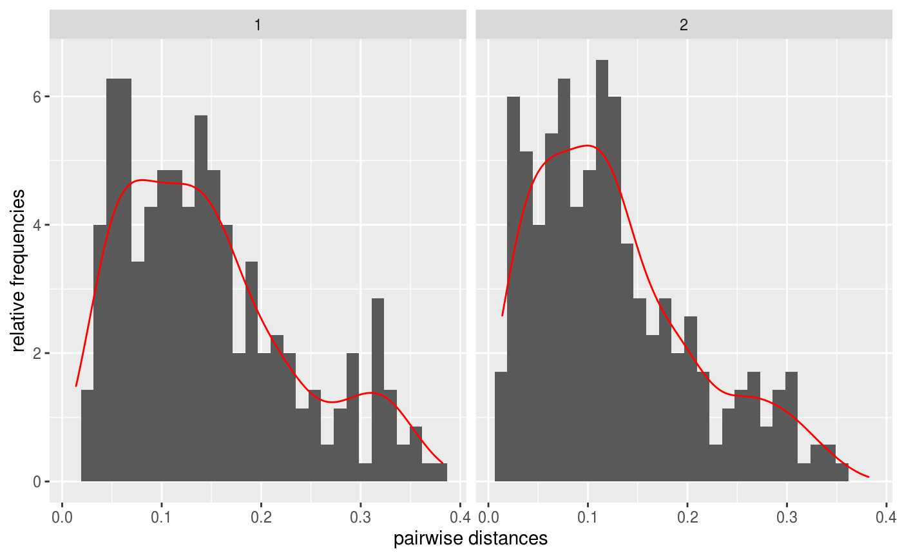
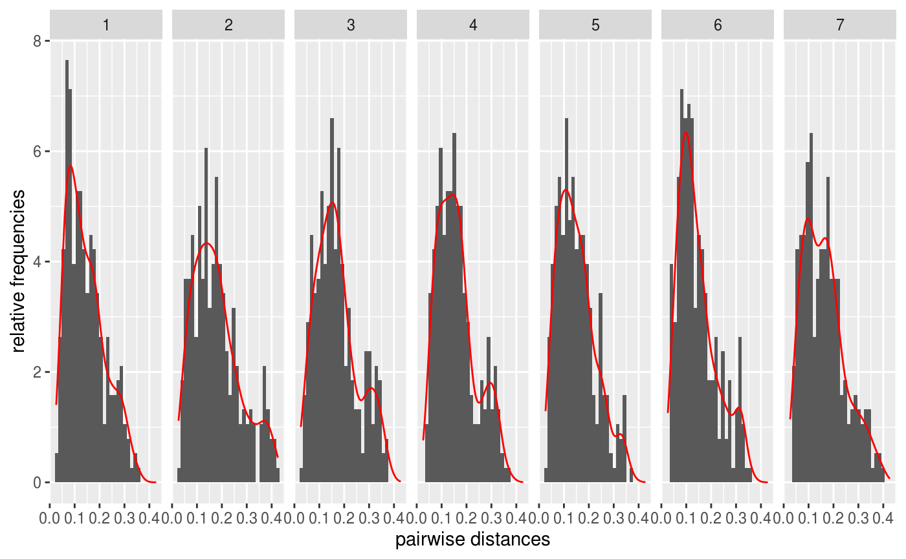

R/histogram_distance.R
histogram_distance.RdPlot probability distribution of univariate series across bivariate temporal granularities.
histogram_distance( .data = NULL, gran1 = NULL, gran2 = NULL, response = NULL, prob = seq(0.01, 0.99, 0.01), hierarchy_tbl = NULL )
| .data | a tsibble. |
|---|---|
| gran1 | the granularity which is to be placed across facets. Can be column names if required granularity already exists in the tsibble. For example, a column with public holidays which needs to be treated as granularity, can be included here. |
| gran2 | the granularity to be placed across x-axis. Can be column names if required granularity already exists in the tsibble. |
| response | response vari'able. |
| prob | numeric vector of probabilities with values in [0,1]. |
| hierarchy_tbl | A hierarchy table specifying the hierarchy of units |
library(tsibbledata) library(ggplot2) library(tsibble) library(lvplot) library(dplyr) library(gravitas) library(purrr) library(magrittr) sm <- smart_meter10 %>% filter(customer_id %in% c("10017936")) .data = sm gran1 = "wknd_wday" gran2 = "hour_day" response = "general_supply_kwh" .data %>% histogram_distance(gran1 = "wknd_wday", gran2 = "hour_day", response = "general_supply_kwh")#> Warning: Values are not uniquely identified; output will contain list-cols. #> * Use `values_fn = list` to suppress this warning. #> * Use `values_fn = length` to identify where the duplicates arise #> * Use `values_fn = {summary_fun}` to summarise duplicates#> #> #> #> #> #> #>#>.data %>% histogram_distance(gran1 = "day_week", gran2 = "hour_day", response = "general_supply_kwh")#> Warning: Values are not uniquely identified; output will contain list-cols. #> * Use `values_fn = list` to suppress this warning. #> * Use `values_fn = length` to identify where the duplicates arise #> * Use `values_fn = {summary_fun}` to summarise duplicates#> #> #> #> #> #> #>#>